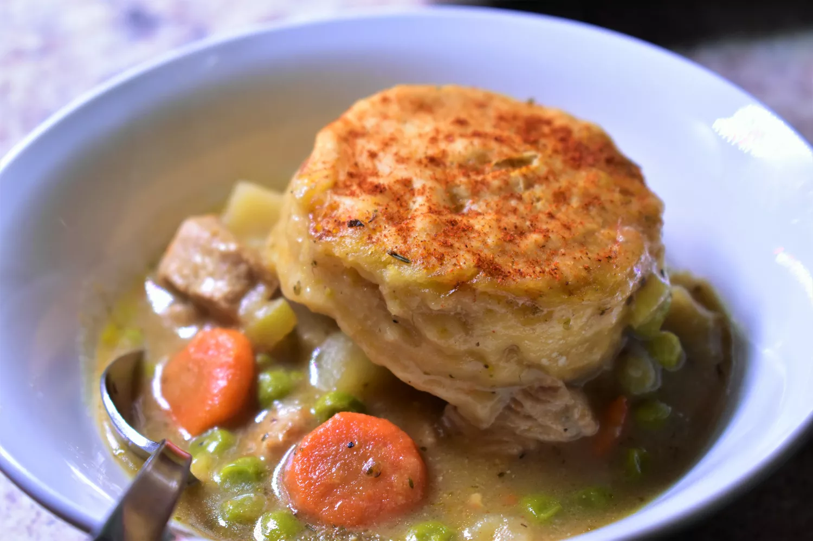

Chicken and Dumplings Casserole

Home made goodness
This easy to make recipe will wow your friends and family! With a prep time of 20 minutes, a cook time of 80 minutes and a total time of 100 minutes, you'll have yourself a little taste of the south in no time!
Recipe yields 6 servings
Ingredients
- 1 pound skinless, boneless chicken breasts, cut into small pieces
- 1 cup sliced carrot
- ½ cup sliced celery
- 1 cube chicken bouillon, or more to taste
- ⅓ cup butter
- ½ cup chopped onion
- 2 teaspoons minced garlic
- ½ teaspoon poultry seasoning
- ⅓ cup all-purpose flour
- ½ teaspoon dried basil
- ½ teaspoon dried thyme
- ¼ teaspoon ground black pepper
- 1 ¾ cups chicken broth
- ⅔ cup milk
- 1 cup frozen peas
- 1 (16.3 ounce) package refrigerated biscuit dough, separated
Steps
- Preheat the oven to 350 degrees F (175 degrees C). Grease a large baking dish.
- Combine chicken, carrot, celery, and bouillon in a large pot and add enough water to cover. Bring to a boil, cover, and cook until chicken is no longer pink in the centers, 10 to 15 minutes. Drain, reserving chicken and broth in another pot or bowl.
- Melt butter in the same pot over medium heat. Cook onion and garlic in the hot butter for 5 minutes. Stir in flour, poultry seasoning, basil, thyme, and pepper. Stir in chicken broth and milk slowly. Add chicken mixture and peas. Simmer over medium-low heat until thick, 10 to 15 minutes. Pour mixture into the prepared baking dish.
- Bake in the preheated oven until mixture is bubbling, 20 to 25 minutes. Remove from the oven and place biscuits on top. Cover and bake for 15 minutes. Uncover and continue baking until biscuits are golden brown, 15 to 20 minutes more.
Home